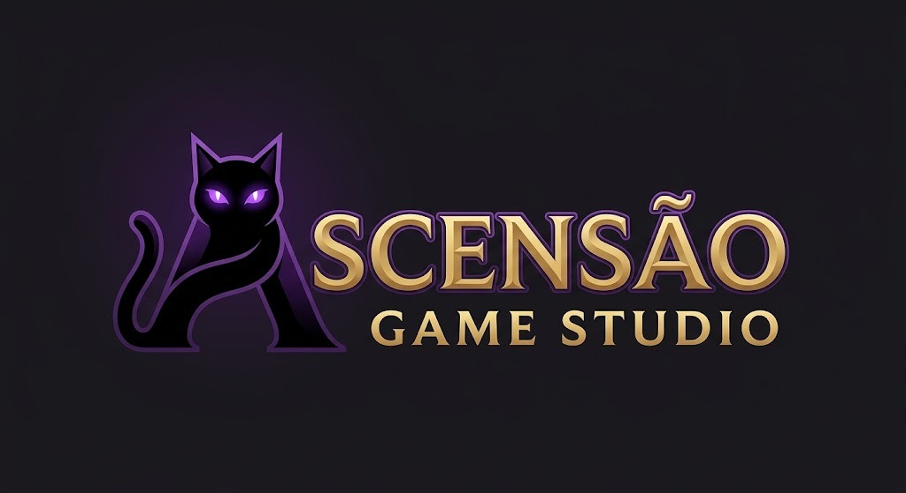
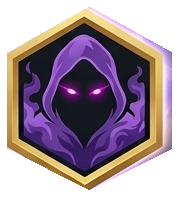

2D
Visão de cima
A horda vem de todos os lados e você domina o mapa com skills, passivas e cartas. Também no celular.

Bullet Heaven indie • 2D e 3D no mesmo jogo
Os Céus pediram que você limpasse o Abismo. A Sombra pede que você ouça antes do golpe.

13 classes, cada uma com passiva, skill e ultimate próprias. Veja cada uma em ação, dentro do mapa, no meio da horda. As Elite são a evolução de cada classe depois de enxergar a verdade.
O vídeo do jogo chega em breve.
Um bullet heaven indie que você joga em 2D ou em 3D. Troque de modo com um botão, na hora, sem instalar nada.
A horda vem de todos os lados e você domina o mapa com skills, passivas e cartas. Também no celular.
O mesmo Abismo com câmera atrás do personagem, no computador. As mesmas classes, os mesmos mapas.
Nível, talentos, equipamentos, cartas e missões valem nos dois modos. Tudo o que você conquista continua com você.
É um jogo só. Ao trocar de modo você continua do mesmo ponto, sem novo download e sem recomeçar.
As 13 classes têm vídeo em 2D e em 3D na seção de Classes: use o botão do vídeo para comparar.
Ondas de criaturas, chefes que já foram heróis e uma história em que os vilões moram nos Céus. Cada descida é diferente, e cada criatura derrotada deixa uma pergunta.
Cartas de nível, talentos permanentes, equipamentos e chefes nas ondas 10, 20 e 30. Quanto mais fundo, mais forte a horda.
6 classes base e 7 subclasses Elite, com habilidades, passivas e cartas próprias. Troque de estilo na Cidade e teste nos bonecos de treino.
O Ferreiro, o Mercador e o Alquimista estão presos nos mapas. Proteja-os, resgate-os e eles voltam para a Cidade com novos serviços.
O mesmo jogo em terceira pessoa, no computador. Liberado dentro do próprio jogo, com toda a progressão mantida.
Pul, Mani e Ador mandaram um herói limpar o Abismo. A Sombra sussurra o que eles não contam.
O jogo é feito por uma pessoa só, mas arte, música, vozes e ferramentas custam. Sua ajuda paga os assets e deixa o jogo mais bonito, mais longo e mais perto do lançamento.
Doações são voluntárias e ajudam o desenvolvimento. Elas não garantem prazo de entrega nem funcionalidades específicas.
O vídeo em 3D desta skill chega em breve.